01 · 变分自编码器(VAE)
← 返回课程目录本文目录
The original article content is not automatically translated.
本文最后更新于 2026年11月4日 凌晨
math: true
北京大学信息科学技术学院 生成模型基础(2025秋)的课程笔记
第一讲：VAE
Intro
何为生成模型： create good data from noise
什么data才算good?
数学上：样本来自同一分布，与训练数据相同 应用上：通常表现好
Autoencoders
Basics
autoencoder的定义：前馈神经网络 输入$x$ 预测输出$Output$
最简单的autoencoder
$h=Ux$ (hidden state)
$Output=Vh=VUx$
矩阵$U$ $k×d$维，$x$ $d×1$维，$V$ $d×k$维 $Output$ $k×1$维
通常$k<<d$，相当于对$x$进行了数据降维
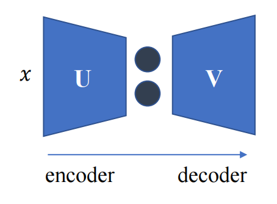
那要如何确定$V$和$U$呢？
我们$minimize|VUx-x|$，也就是让$Output$与原输入$x$距离尽量小
这个问题有多组可能解，若$U^{\ast}$和$V^{\ast}$为一组解，那么$U^{\ast}/2$和$V^{\ast}×2$显然也为解
这是大名鼎鼎的Principled Component Analysis(PCA)，无需使用梯度下降法解决，有闭式解(ml，cv课上都有证明过程)
autoencoder的一般形式
$f(g(x))=x$，$f$为encoder，$g$为decoder
$f$和$g$不能太复杂，否则可能导致学会了恒等映射，进行复制粘贴，从而造成过拟合
$f$和$g$可以是很简单的神经网络，但是所有参数都应用梯度下降法来训练，这使得autoencoder具有数据特异性，与.mp3 .jpeg等压缩方式不同，“猫图”训练出的autoencoder很可能无法用于“狗图”
然而，Vanilla autoencoder并非生成模型！
输入$x$确实服从某个数据分布，但是我们未知
如果在训练后隐藏层$h$服从某个已知分布，例如高斯(正态)分布，此时将encoder用随机noise替换，decoder就变成了生成模型！！
Variational Autoencoder
问题来了，如何使训练后隐藏层$h$服从某个已知分布？
上面的autoencoder中 encoder： $h=g(x)$ decoder： $x’=f(h)$
我们引入Variational Autoencoder的方法，decoder不变，encoder变为$h\sim g(x)$，此时$f$为确定函数，$g$为随机函数，$h$为随机变量
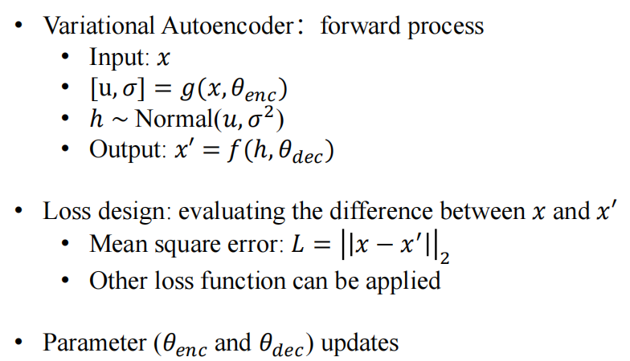
公式如图所示，前向传播中由g生成正态分布的均值与标准差，由$f$生成$Output$，损失函数为最小化$x$与$x’$的距离，$\theta_{enc}$和$\theta_{dec}$为神经网络参数，不断更新
训练过程
训练$\theta_{dec}$较为简单，这是由于$L$对$f$可微，$f$(几乎处处)对$\theta_{dec}$可微，直接采用梯度下降即可训练
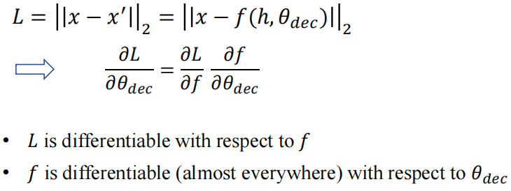
但是！在训练$\theta_{enc}$时，我们遇到了麻烦
$L$对$h$可微，$\theta_{enc}$对$g$可微，然而$g$对$h$不可微！！
$h$是个正态分布，参数由$g$产生，与$g$之间不是简单的函数关系，如何能微分？
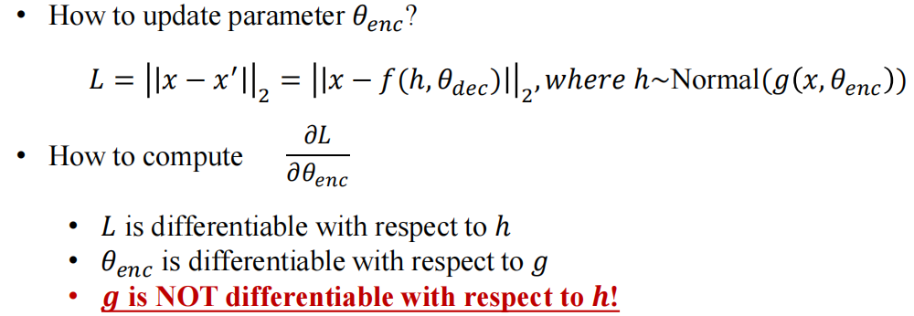
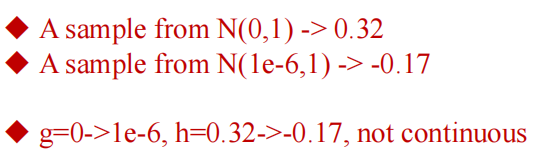
关键技巧：Reparameterization trick(重参数化)
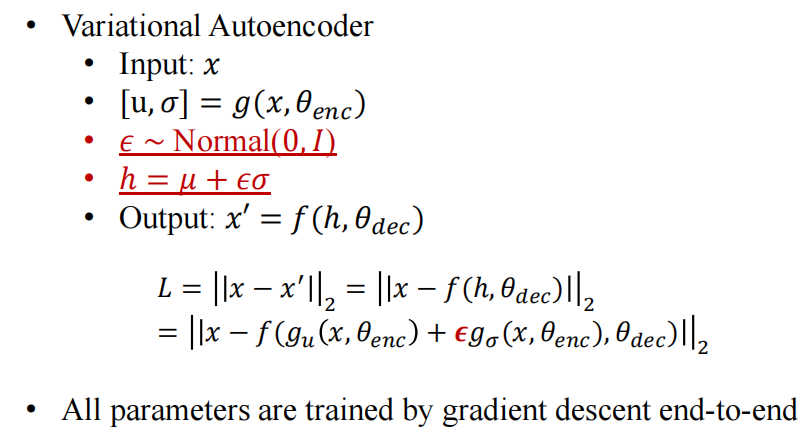
由正态分布的性质，我们先取
$\epsilon \sim N(0,I)$，即其服从标准正态
再令$h=\mu+\epsilon\sigma$
由正态分布均值方差的性质，此时仍有$h \sim N(\mu,\sigma^2)$
且现在的$g$对$h$就可微了，将$g$拆成$g_{enc}$和$g_{dec}$两个函数，分别求微分即可
Loss函数的选择：需要加上$L_{r}$项，使用KL散度衡量学到的$N(\mu(x),\sigma^2(x))$与标准正态$N(0,I)$两个分布之间的差异，后面讲解VAE的数学推导时会详细说明
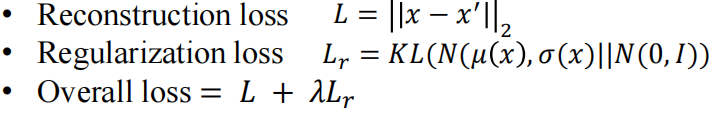
从概率论视角推导VAE
假设先有$z$，$z \sim p(z)$先验分布，$z$指导了$x$的生成，一般认为$p(z)$是简单已知分布，如正态分布，$x$为复杂分布，但由于数据集已知，所以分布也认为已知，现在的问题就是求出$p(x|z)$，这正是decoder的工作流程，异曲同工！
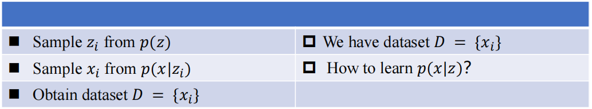
我们采用如下的极大似然估计法(MLE)
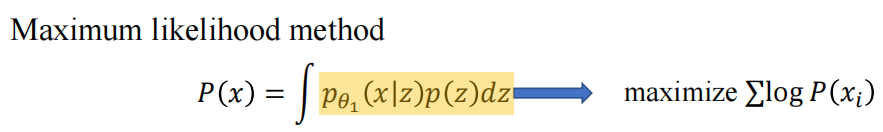
先验假设：给定了固定的$z$，只有小范围的$x$满足$p(x|z)$非零，于是我们设出变分后验分布(Variational Posterior Distribution) $q(z|x)$来找到这些范围
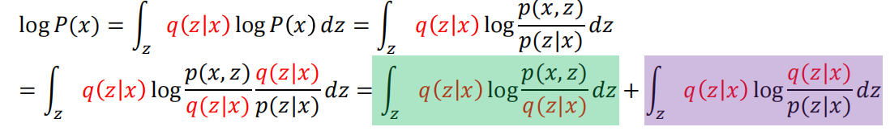
那么MLE就可写成如上形式，前一项(绿色部分)为ELBO，后一项(紫色部分)为$KL(q(z|x)||p(z|x))$
由KL散度非负的性质，即可进一步推出
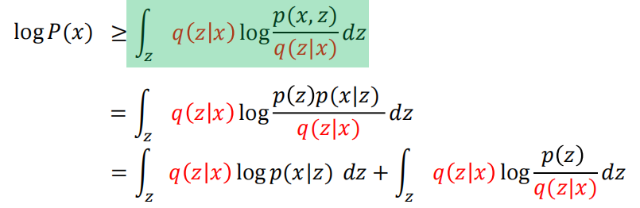
最后一行的第一项为$E_{x \sim q(z|x)}[log p(x|z)]$，q为encoder，p为decoder，先通过encoder编码，在其中采样⼀个$z$，然后decoder给出在这个$z$下重建出$x$的对数概率，若重建出的$x$概率分布越大，那么MLE越大，这一项含义即为Reconstruction Loss
第二项为$-KL(q(z|x)||p(z))$，一般认为先验$p(z)$为标准正态，那么若encoder生成的z分布越接近标准正态，KL散度越小，-KL项越大，MLE越大，这一项含义即为Regularization Loss
总之我们最大化第一项，最小化KL散度，即可最大化$p(x)$，完成MLE估计
KL散度补充
$KL(p||q)=\int p(x) log \dfrac{p(x)}{q(x)} dx$
也可写作$E_{x \sim p(x)}[log \dfrac{p(x)}{q(x)}]$
由$Jansen不等式$，若$f$为凸函数，$E_{x \sim p(x)}[f(x)] \ge f(E_{x \sim p(x)}[x])$
此时取$f(t)=-logt$，$t=\dfrac{q(x)}{p(x)}$
则$KL(p||q) \ge -log E_{x \sim p(x)}[\dfrac{q(x)}{p(x)}]= -log \int p(x) \dfrac{q(x)}{p(x)} dx =-log 1=0$
VAE的一些问题
无法go deep
对隐层维度敏感
无法进行密度估计准确计算$p(x)$
通常只能作为系统一部分而非独立模型
Denoising Autoencoder(DAE)
VAE通过encoder产生$\mu$和$\sigma$，之后进行采样生成noise，DAE则是在input时直接输入noise
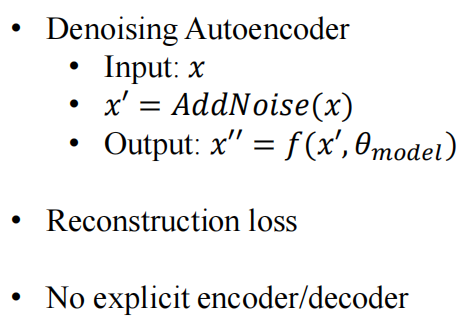
优势在于输入中加入noise扰动，不太会像VAE那样在模型过大时易产生一一映射，可以go deep，被公认为最高效的预训练(自监督)方法之一
Vector Quantized VAE(VQVAE)
Motivation：cv&nlp兼容问题 Image与Language数据类型差异导致联合训练困难
VQVAE的目标：将RGB图像转化为一系列token，用nlp方式处理cv问题
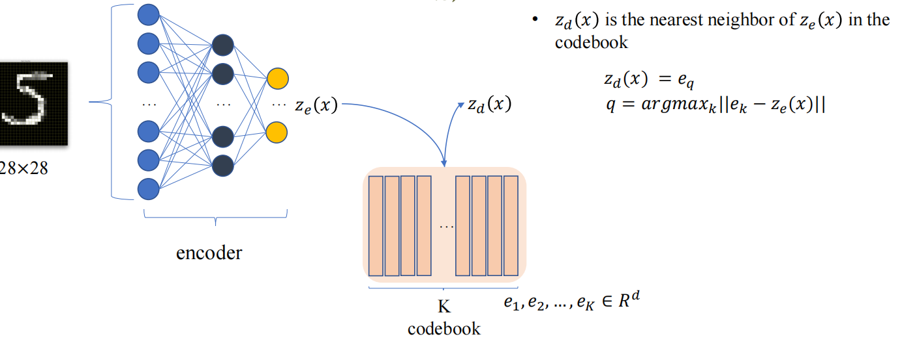
在encoder得到$z_{e}(x)$之后，通过codebook，在$e_{1},e_{2},… ,e_{k}$中找到与$z_{e}(x)$距离最近的向量，作为$z_{d}(x)$传给decoder
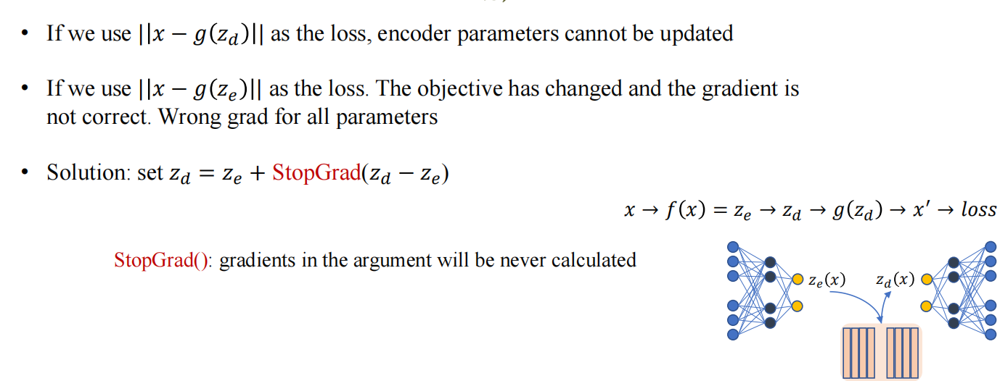
反向传播时也会遇到类似VAE的问题，loss采用$|x-g(z_{d})|$会忽略前面encoder参数，采用$|x-g(z_{e})|$没有考虑查表的操作，更新的梯度直接是错误的，怎生是好？
我们采用第三种方法
令$z_{d}=z_{e}+StopGrad(z_{d}-z_{e})$，$StopGrad$中的参数不会被计算梯度
$Loss=|x-g(z_{e}+StopGrad(z_{d}-z_{e}))|$
这样正向传播和反向传播都可以正常更新梯度了
为了使codebook有意义，我们还需要引入Codebook Loss
$Loss=|z_{e} -StopGrad(z_{d})|+\beta|z_{d} -StopGrad(z_{e})|$
VQVAE Loss = Reconstruction Loss + Codebook Loss